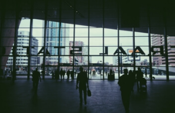

Pergeseran budaya ketimuran menuju budaya kebarat-baratan sudah menjadi alarm darurat di bumi pertiwi. Sembilan puluh persen remaja di Indonesia sudah
mengalami pergeseran budaya karena
kecanggihan teknologi yang membuat
informasi lebih cepat tersebar. Mengetahui
dunia luas memang bisa menambah
wawasan yang membuat kita lebih cerdas
dan maju, tetapi dampak buruk dari
kecanggihan internet saat ini sedikit banyak mempengaruhi perilaku kita sebagai generasi milenial.
Satu-satunya cara bertahan pada zaman ‘edan’ ini adalah dengan mulai mencintai negara sendiri
yang menjunjung erat nilai sosial dan budaya ketimuran. Jangan sedikit-sedikit buka internet,
yang dicari malah gosip artis internasional. Coba, deh. Ingat-ingat kapan terakhir kali buka-buka
tentang isu nasional.
perubahan-perubahan tersebut otomatis menggeser nilai-nilai dalam masyarakat yang mengalami
perubahan-perubahan. Pergeseran-pergeseran nilai budaya adalah perubahan nilai budaya dari
nilai yang kurang baik menjadi baik ataupun sebaliknya. Salah astu aspek yang bergeser dalam
kehidupan masyarakat dewasa ini sistem nilai budaya yang menjadi ciri khas dari suatu keluarga.
Keluarga lebih banyak dimasuki oleh budaya dari luar sehingga nilai budaya yang telah
tertanam sejak dahulu kala dan merupakan warisan leluhur hampir-hampir dilupakan oleh generasi
sekarang ini. Hal ini disebabkan antara lain oleh kemajuan teknologi dan pesatnya laju pembangunan
yang membawa dampak perubahan dan pergeseran nilai di masyarakat. Pergeseran nilai dalam
masyarakat kita perlu dilihat sebagai proses sosial. Artinya sebagai proses, ia belumlah sebagai
akhir dari tingkatan masyarakat. Masih ada lanjutan tingkatan yang terus menjadi hingga sampai
pada level terakhir.Pergeseran ini agar berjalan dengan baik, maka perlu pengawasan dari kita
semua. Jangan sampai budaya luhur yang telah ada menjadi kabur dan tidak up to date dengan
lingkungan kekinian. Pergeseran nilai selain bisa berakibat positif juga negatif. Tergantung cara
kita dalam melihat ruh pergeseran itu. Agar budaya massa kita menjadikan pergeseran ini sebagai
unsur konstruktif, maka perlu ada penyadaran seluruh lapisan masyarakat. Penyadaran ini bisa d
ilakukan dalam skala struktur sosial kita. Pada masyarakat bali contohnya menurut widodo As
dalam sambutan nya yang dibacakan gubernur bali Dewa Made Brataha kala itu mengatakan
kehidupan masyarakat Bali yang selama ini dikenal ramah, sopan, bersahaja dan tidak mudah
terprovokasi kini mengalami pergeseran nilai. “Tindakan perbuatan yang mengarah anarkis dan
emosional dalam memecahkan serta menghadapi suatu persoalan dalam kehidupan bermasyarakat,”
Ia mengatakan, kecenderungan yang bersifat kasuistis itu seyogyanya tidak patut terjadi dalam
lingkungan kehidupan masyarakat Bali. Bali sebagai daerah tujuan wisata internasional, kasus-kasus
seperti itu akan cepat mencuat ke permukaan, baik di tingkat nasional maupun ke penjuru dunia.
Jika tindakan itu tidak dihentikan dari sekarang dikhawatirkan akan berpengaruh terhadap citra
pariwisata Bali yang telah memiliki konsep-konsep adiluhung,” ujar Widodo AS.
Konsep nilai yang luhur itu antara lain “menyama braya” yakni semangat kebersamaan dan persaudaraan maupun konsep “tri hita karana” yakni hubungan yang harmonis sesama manusia, lingkungan dan Tuhan Yang Maha Esa.
“Konsep-konsep luhur itu sudah saatnya dihayati kembali serta dilaksanakan dalam kehidupan masyarakat Bali sehari-hari,” harap Widodo AS.
Artikel Lainnya
Gaya Hidup Hedonis
Gaya hidup hedonis adalah gaya hidup yang lebih mengutamakan materi daripada hal-hal lain. Remaja saat ini adalah remaja yang hausakan perhatian dari orang lain.

Nilai sosial yang mulai bergeser
Pergeseran budaya ketimuran menuju budaya kebarat-baratan sudah menjadi alarm darurat di bumi pertiwi. Sembilan puluh persen remaja di Indonesia sudah mengalami pergeseran.
Nilai sosial yang mulai bergeser
Pergeseran budaya ketimuran menuju budaya kebarat-baratan sudah menjadi alarm darurat di bumi pertiwi. Sembilan puluh persen remaja di Indonesia sudah mengalami pergeseran.
Gaya Hidup Hedonis
Gaya hidup hedonis adalah gaya hidup yang lebih mengutamakan materi daripada hal-hal lain. Remaja saat ini adalah remaja yang hausakan perhatian dari orang lain.
Nilai sosial yang mulai bergeser
Pergeseran budaya ketimuran menuju budaya kebarat-baratan sudah menjadi alarm darurat di bumi pertiwi. Sembilan puluh persen remaja di Indonesia sudah mengalami pergeseran.
Nilai sosial yang mulai bergeser
Pergeseran budaya ketimuran menuju budaya kebarat-baratan sudah menjadi alarm darurat di bumi pertiwi. Sembilan puluh persen remaja di Indonesia sudah mengalami pergeseran.